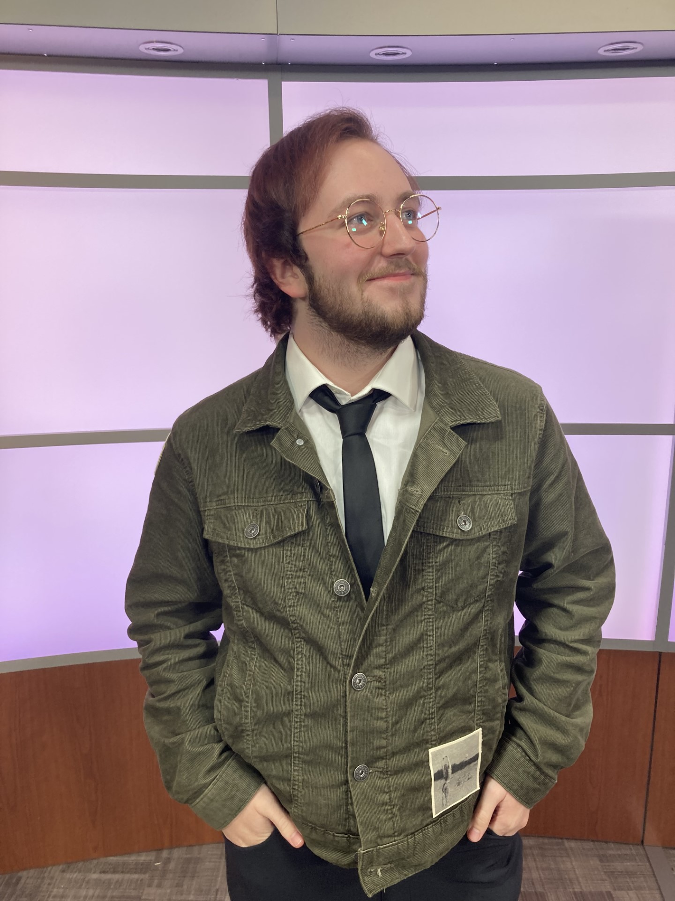

Addison S. Dayton
Student at the University of Wisconsin-Eau Claire
About Me
My name is Addison Dayton and I am from Saint Paul, Minnesota, in the United States of America. Back home I go to the University of Wisconsin-Eau Claire, which is in the western part of Wisconsin. There I am a double-major in Organizational Communications and Creative Writing, and a minor in Multimedia Communications. I choose to take this course becuase I need to learn basic coding for my minor, and I thought it would be useful to know some basic web development. I am mainly interested in media production and studying organizations. In terms of future plans I hope to work inside organizations to improve communicational realtionships.

Skills & Interests
| Skills | Interests |
|---|---|
| Audiovisual Media Production | Video & Tabletop Games |
| Writing & Editing | Reading & Writing |
| HTML, Javascript, & CSS (Devolping) | Music & Playing the String Bass |
Hobbies & Passions
In terms of my hobbies, I like a few diffrent things. I like to play games, both video games, like Alan Wake or Disco Elysium, and tabletop games like Dungeons and Dragons. I also played the string bass for over a decade, and although I am no longer in the orchestra, I am still passionate about the instrument and want to return to playing it. Some of my other intrests inculde reading, books like Babel by R. F. Kuang. I also like writing, although that is an area I am still devolping in. I also am very pasionate about studying communciations. It is a super intresting field, and I like to look at how people and systems interact with each other. My final big intrest is audiovisual media production. Here is a link to my personal YouTube channel and the TV10 Youtube, were I work back home.
Reflection & Future Plan
I think that this page is a good overview of who I am and what my skills are. I am very much a chill but dedicated person, and I hope thats the vibe this page gives off. If I where to expand this site I might add a few other pages, maybe something that could show off some of my writing, then something else that could show off some of the videos I have made and projects I have been involed with. If I was better at coding I would like to make the cite look more unique and pretty, as well as making the whole experience smoother.
My Design Process